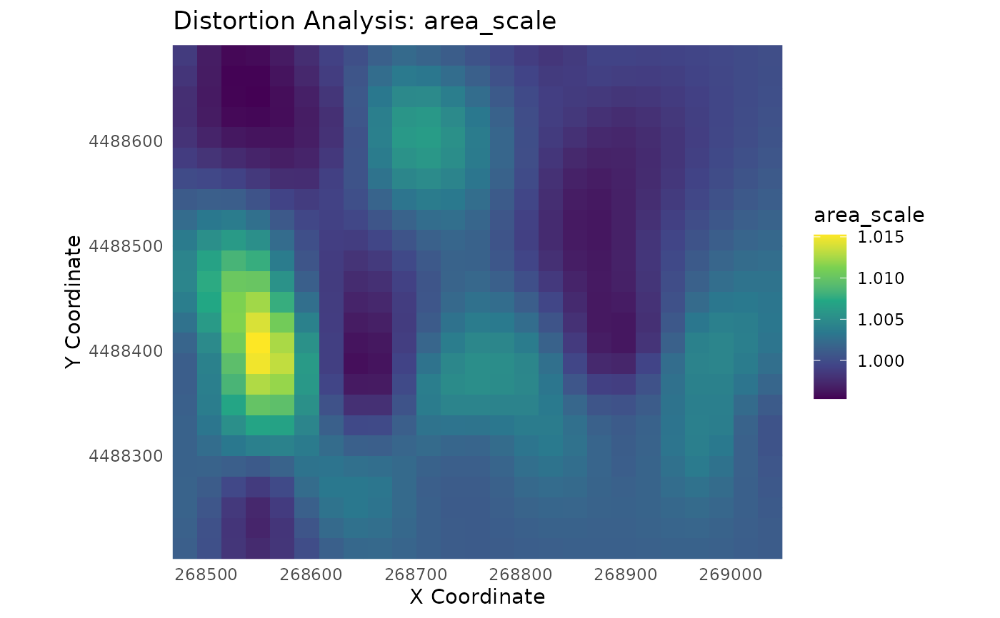

Perform a Differential Distortion Analysis
analyze_distortion.RdComputes a comprehensive set of detailed distortion metrics for a PAI model at specified locations, based on Tissot's indicatrix theory.
Arguments
- pai_model
A model object of class
pai_modelfromtrain_pai_model().- points_to_analyze
An
sfobject of points where the analysis should be performed.- reference_scale
A single numeric value used to normalize the area scale calculation. Defaults to
1(no normalization).
Value
An sf object containing the original points and new columns with all
calculated distortion metrics:
- a, b
The semi-major and semi-minor axes of the Tissot indicatrix.
- area_scale
The areal distortion factor (
a * b).- log2_area_scale
The base-2 logarithm of
area_scale, a symmetric metric centered at 0.- max_shear
The maximum angular distortion in degrees.
- max_angular_distortion
The maximum angular distortion in radians (the
2Ωmetric).- airy_kavrayskiy
The Airy-Kavrayskiy measure, a balanced metric combining areal and angular distortion.
- theta_a
The orientation of the axis of maximum scale (in degrees).
Details
This function is the core analytical engine of the mapAI package. It
implements a differential analysis by calculating the first partial derivatives
of the spatial transformation learned by a pai_model. This is achieved using
a numerical differentiation (finite difference) method that is
universally applicable to all models in the package (lm, rf, gam, helmert).
From these derivatives, it calculates key distortion metrics that describe how shape, area, and angles are warped at every point.
Interpreting Results by Model Type:
The nature of the output is highly dependent on the model used:
gam(Recommended for this analysis): Produces a smooth, differentiable surface. The distortion metrics will be spatially variable and provide a rich, meaningful understanding of how distortion changes across the map.helmert&lm: Represent global transformations. The distortion metrics will be constant for every point.rf: Creates a step-like surface. The local derivatives may be effectively zero, resulting in metrics indicating no local distortion (e.g.,area_scale= 1,max_shear= 0). This analysis is therefore not informative forrfmodels.
Examples
# This example showcases the full analytical workflow.
library(magrittr)
# --- 1. Load data and train a GAM model ---
data(gcps)
gam_model <- train_pai_model(gcps, method = "gam")
#> Training 'gam' model...
# --- 2. Create a regular grid of POINTS for analysis ---
analysis_points <- sf::st_make_grid(gcps, n = c(20, 20)) %>%
sf::st_centroid() %>%
sf::st_sf()
# --- 3. Run the distortion analysis ---
distortion_results <- analyze_distortion(gam_model, analysis_points)
#> Calculating distortion metrics for gam model...
#> Finalizing metrics from derivatives...
#> Distortion analysis complete.
# --- 4. Inspect the rich output ---
# Note the new columns like 'airy_kavrayskiy'.
dplyr::glimpse(distortion_results)
#> Rows: 400
#> Columns: 9
#> $ geometry <POINT [m]> POINT (268471.1 4488204), POINT (268501.4…
#> $ a <dbl> 1.002472, 1.001961, 1.001778, 1.001994, 1.00227…
#> $ b <dbl> 0.9988034, 0.9976392, 0.9958183, 0.9961351, 0.9…
#> $ area_scale <dbl> 1.0012726, 0.9995951, 0.9975887, 0.9981215, 1.0…
#> $ log2_area_scale <dbl> 0.0018348439, -0.0005842103, -0.0034829996, -0.…
#> $ max_shear <dbl> 0.10503794, 0.12382367, 0.17093118, 0.16800630,…
#> $ max_angular_distortion <dbl> 0.003666516, 0.004322261, 0.005966624, 0.005864…
#> $ airy_kavrayskiy <dbl> 3.765217e-06, 4.711488e-06, 1.035730e-05, 9.482…
#> $ theta_a <dbl> 52.97184, 63.52916, 70.28931, 67.12323, 59.3661…
# --- 5. Visualize the Airy-Kavrayskiy measure ---
# This plot shows areas of combined areal and angular distortion.
plot_distortion_surface(
distortion_results,
metric = "airy_kavrayskiy",
gcp_data = gcps
)
#> Scattered points detected. Creating a point plot with geom_point().
#> For a continuous surface plot, run analyze_distortion() on a regular grid of points.
#> Coordinate system already present. Adding new coordinate system, which will
#> replace the existing one.
